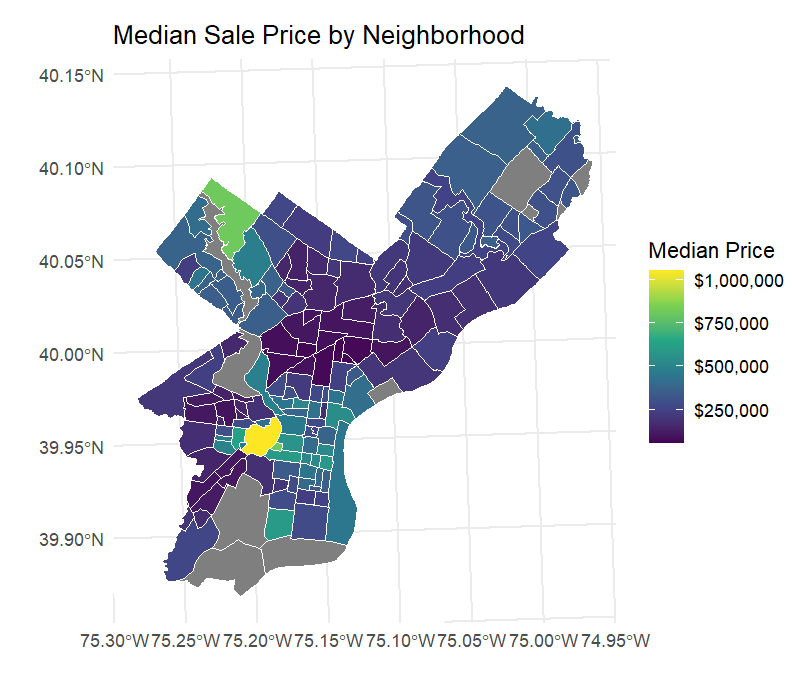
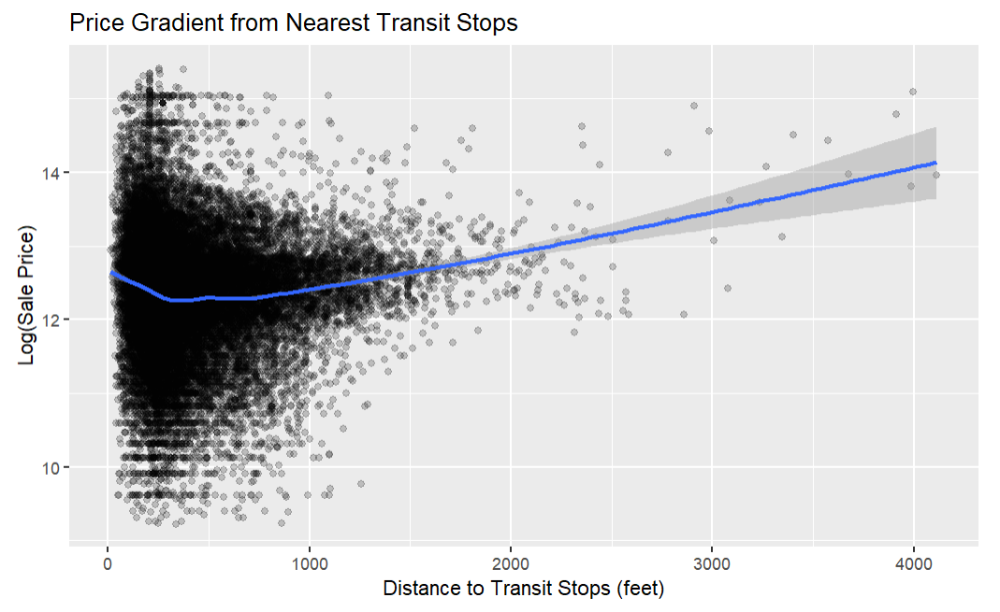
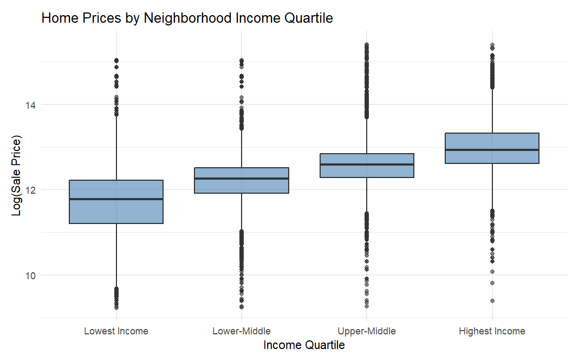

Predicting Housing Prices in Philadelphia
Improved Model for Property Tax Assessment
Mackenna Amole, Gab Chen, Angie Kwon
Framework & Foundations
Who We Are & Why We’re Here
- AKC/onsultants
- Using our experience, we have developed a new and improved Automated Valuation Model for Philadelphia’s property tax assessments.
- Philadelphia is full of prime real estate!
- What factors influence home price? How can we capture every important factor to efficiently and effectively determine home prices across the city?
Data Sources
- Property Sales
- Census ACS : 2024 / Philadelphia County Tracts
- Median Home Value
- Median Household Income
- Poverty Count & Total (Calculate Percentage)
- Total Education & Bachelors, Masters, PHDs (Sum Bachelors or Higher, Calculate Percentage)
- Total Population
- Total Tenure & Owner Occupancy (Calculate Percentage)
- OpenDataPhilly : 2023
- Crime Data
- Green Space (as PPR Properties)
- Hospitals
- Landmarks
- Schools
- Traffic Safety (as Crash Data)
- Transit Stops
Findings
Visualizations

Visualizations

Visualizations

Model Cross-Validation Results
| Model Name | Variables | RMSE | Adjusted R-Squared | MAE |
|---|---|---|---|---|
| model2 | Structural | 0.543 | 0.3219 | 0.347 |
| model3_2 | Structural & Census | 0.526 | 0.5563 | 0.334 |
| model4 | Spatial, Structural & Census | 0.525 | 0.5601 | 0.332 |
| model6_5 | Spatial, Structural, Census & Fixed Effects | 0.523 | 0.5935 | 0.330 |
- At times, included too many variables –> cut down number
- When a model decreased in adjusted r-squared, we looked into significance of included variables –> removed statistically insignificant variables
- Iterations with average distance to the 3-5 nearest neighbors of different factors found these variables to be highly inaccurate in model –> used buffers instead
Selected Model & Its Performance
- Final Model: RMSE : 0.523 / Adjusted R-Squared : 0.5935 / MAE : 0.330
- Included Factors
- Structural: Livable area, Number of Bathrooms, Number of Bedrooms, Age
- Census: Median Household Income, % of Population with College Degree, Poverty Rate, % of Owner Occupied Units, % White Population, % Black Population, % People Commuting via Car, % People Commuting via Transit, % People Working Remote/From Home, Population Density
- Spatial: Parks (2 mi), Transit (0.25 mi), Schools (2 mi), Crime (0.25 mi), Crash (0.25 mi), Hospitals (2 mi), Landmarks (0.5 mi)
- Fixed Effect: Neighborhood
- Interaction: Crime & Median Income, Parks & Median Income, Landmarks & Total Livable Area, Distance to Downtown & Transit, Distance to Downtown & Total Livable Area, Age & Total Livable Area, Owner Occupancy & Total Livable Area, Rent Burden & Black Population, Number of Stories & Median Income
- Logged Variables: Age, Distance to Downtown
Limitations
- 1 RMSE indicates that our final model has a 59% error.
- 2 Only multicolinearity and no influential outliers assumptions confidently met. Linearity, constant variance, and normality of residuals were very tentatively met, if that.
- 3 Overall, requires many different variables which can be difficult and costly to collect. In spite of so many variables being included, the cost may not be worth the benefit because the predictability of the model is still limited.
Policy Recommendations
- 1 - Racial Considerations
Explore the racialized aspect of sales price differences. - 2 - Housing Over History
Ensure preserving historic neighborhoods won’t be prioritized over housing for the present. - 3 - Small Neighborhood Limitations
Find a better way to study smaller neighborhoods as a variable.
Thank You
AKC/onsultants